Day 13. state update와 readout 학습: 최소제곱에서 ridge까지
Phase 2 · RC는 왜, 어떻게 작동하는가
이번 질문 reservoir 상태는 무엇을 담고, readout weight는 어떻게 구하나?
왜 배우나 내 device N개 전류가 거의 같은 노드라 weight가 튀는지(ridge λ 필요) 판단한다.
오늘의 장면 입력 시계열 u(t) → state update → 상태 × weight → y(t) → 오차 최소 weight 구함
오늘 반드시 t는 초가 아니라 번호다. 노드가 거의 같으면 weight가 +4, −3처럼 튀므로 ridge의 λ가 필요하다.
나중에 봐도 됨 전치·역행렬 표기 · 2×2 역행렬 확인(심화)
이후 쓰이는 곳 Day 15–16 fading memory · Day 17–18 XOR · Day 19–20 서로 다른 노드 · Day 21–22 ESN 실습
지난 학습 복습
지난 학습 단위(Day 12 · ESN·LSM과 물리 reservoir computing)의 핵심을 다른 예로 확인합니다. 고르는 즉시 맞았는지와 이유가 보입니다. 틀려도 아래 학습자료는 그대로 열려 있고, 틀린 문제에는 다시 볼 곳이 붙습니다.
사전 테스트 (선택)
사전 테스트 펼치기 · 배우기 전에 짐작해 보는 문제 (선택)
학습자료
지난 학습(Day 11–12)는 여기까지 왔습니다.
- RNN(state를 다음 time step으로 넘기는 신경망)은 내부를 학습시키기 어렵다.
- ESN(echo state network)은 내부를 난수로 정한 뒤 고정한다. 그리고 마지막 한 층, 곧 output layer만 학습한다. 이 층을 readout이라 부른다(state에 weight를 곱해 답을 내는 층).
- 이 방식을 통틀어 reservoir computing(RC)이라 부르고, 고정된 내부를 reservoir라고 부른다(Day 12의 ESN·LSM 절).
★ 그런데 빈칸이 두 개 남아 있습니다.
이번 주제에서 답할 질문 — 아래 학습 구간들이 차례로 답합니다.
- 고정된 난수 네트워크의 state에는 무엇이 담겨 있나? 무엇이 담겨 있길래 마지막 한 층만 고쳐도 답이 나오나?
- 그 마지막 한 층은 구체적으로 어떻게 학습하나?
오늘은 Day 11–12의 작은 예에서 이어 가며 이 두 빈칸을 숫자로 채웁니다. 아래 질문 여섯 개를 차례로 풉니다. 앞을 알아야 뒤가 읽히니 순서대로 가세요.
- Reservoir에 들어가는 입력, 즉 "time series"는 어떻게 생긴 숫자인가? (1초에 250번 재면 무엇이 생기나)
- State update식 \(x(t+1) = f(W x(t) + W_{in} u(t))\)는 실제로 어떤 계산인가? (Day 11–12의 두 칸 예를 '서로 섞이는' node 두 개로 바꿔 손 계산)
- 그렇게 만든 state는 무엇을 뜻하나? 왜 "입력 이력의 비선형 전개"라고 부르나?
- Readout은 어떻게 학습하나? Day 11–12에서 식 두 개로 풀던 것이 sample이 많아지면 왜 least squares가 되고, 왜 ridge라는 regularization term을 더하나?
- 답이 '종류'(분류)일 때 readout은 무엇을 내나(softmax)? 한 번에 푸는 길과 조금씩 내려가는 길(gradient descent·Adam)은 언제 쓰나?
- 그래서 왜 고정해도 되고, 언제는 고정하면 안 되나?
1. Time series: reservoir가 받는 숫자는 어떻게 생겼나
상황. 내 device에 4 ms마다 전압 펄스를 넣고 그때마다 전류를 읽으면, 연속 곡선이 아니라 '번호 붙은 전류 숫자 목록'이 남습니다. Reservoir의 식이 받는 것은 이 목록뿐이므로, 목록의 몇 번째가 몇 ms인지부터 정해야 합니다.
왜 지금? 식의 \(t\)가 몇 ms인지 정하지 않으면, 뒤에 나오는 "한 단계 전", "10단계 전"이 몇 ms 전인지 알 수 없습니다.
어디에 쓰이나? 논문의 "72 Hz로 sampling", "박동 하나가 50 time step" 같은 문장과 내 device의 펄스 간격을 같은 말로 옮길 때 씁니다.
끝나면 할 수 있는 것. "1초에 250번 잰다"는 말을 sampling rate·sampling period·time step이라는 세 단어로 풀어 말할 수 있고, 700 ms짜리 심전도 한 박동이 몇 개의 숫자가 되는지 계산할 수 있다.
Day 11–12에서 RNN은 "시간 순서로 들어오는 신호"를 다룬다고 했습니다. 그리고 식의 \(t\)를 'time step(정수, 측정 번호)'이라고만 적었습니다(Day 11의 RNN 일반식). 오늘은 식에 나오는 \(u(t)\)의 \(t\)가 실제로 몇 ms인지부터 정합니다. Day 10 사다리로 말하면 1단, task에서 입력을 무엇으로 정하느냐의 일입니다(Day 10의 증거 사다리).
아래 상자에서 새 용어 넷이 한꺼번에 나옵니다. 먼저 표로 훑어 두세요.
| 용어 | 뜻 | 이 예제에서 |
|---|---|---|
| Sampling | 연속 신호를 일정한 간격마다 재는 일 | 4 ms마다 전류 읽기 |
| Sampling rate | 1초에 몇 번 재나 (단위 Hz) | 250 Hz |
| Sampling period | 두 번 잴 때 사이의 시간 (단위 s) | 4 ms |
| Time step \(t\) | 잰 값에 붙인 번호 (0, 1, 2, …) | \(t = 3\)이면 12 ms |
Time series·sampling·sampling period·time step
왜 필요한가. 심장의 전기 신호, 손가락의 압력, device에 흐르는 전류는 모두 시간에 따라 연속적으로 변합니다. 그런데 컴퓨터(그리고 reservoir 식)는 연속 곡선을 그대로 다루지 못하고 숫자 목록만 다룹니다. 그래서 곡선을 일정한 간격으로 "찍어서" 숫자 목록으로 바꿉니다.
무엇인가. 연속 신호를 일정한 시간 간격마다 재는 일을 sampling이라 합니다. 잰 값 하나하나도 영어로는 sample이라 부릅니다. 이 글에서는 헷갈리지 않게 '잰 값'이라고 쓰겠습니다. Day 10의 sample(입력 하나와 정답의 한 쌍)과 다른 것이기 때문입니다. 둘의 구분은 readout 학습 절에서 다시 봅니다.
1초에 몇 번 재는지가 sampling rate(단위 Hz = 1/s)입니다. 두 번 잴 때 사이의 시간이 sampling period(단위 s)입니다. 둘은 서로 역수입니다.
\[ \text{sampling period} = \frac{1}{\text{sampling rate}} \]
작은 숫자로. 1초에 250번 재면(250 Hz) sampling period는 \(1/250\) s = 0.004 s = 4 ms입니다. 0 ms, 4 ms, 8 ms, 12 ms, …에 값을 하나씩 얻습니다. 1초 녹음이면 숫자 250개, 10초면 2,500개입니다. 이렇게 시간 순서대로 늘어선 숫자 목록을 time series라고 부릅니다.
이제 각 숫자에 0, 1, 2, 3, …이라는 번호를 붙입니다. 이 번호가 time step \(t\)입니다. \(u(0)\)은 0 ms에 잰 값, \(u(1)\)은 4 ms에 잰 값, \(u(3)\)은 12 ms에 잰 값입니다. 식 안의 \(t\)는 초가 아니라 번호이고, 실제 시각은 "\(t\) × sampling period"로 바꿔야 나옵니다. 예를 들어 "10단계 전"은 250 Hz에서는 40 ms 전입니다. 10 Hz에서는 1초 전입니다. 같은 식, 같은 "10단계"라도 실제 시간은 sampling rate에 따라 25배 다릅니다.
그림 1은 이 과정을 한 장에 보여 줍니다. (a)에서 회색 곡선이 점으로 바뀌는 것을, (b)에서 그 점들이 번호 붙은 표가 되는 것을 보세요.
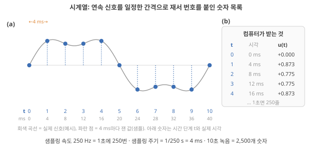
실제 논문의 숫자. 폴더의 Zhong 2022(Nat. Electron.)를 봅니다. 이 논문은 memristor로 reservoir를 만든 RC 시스템입니다. Memristor는 흘러간 전류의 이력에 따라 저항이 변하는 device입니다. 이 시스템은 값을 0·1로 바꾸지 않고 연속 전압·전류 그대로 계산합니다(아날로그, 비트와 바이트).
부정맥 검출 task에서 이 논문은 심전도 파형을 72 Hz로 다시 sampling했습니다. 그리고 한 박동씩 700 ms로 잘라, 박동 하나가 50개 time step이 되게 했습니다. Zhong 2022, p.675 계산해 보면 0.7 s × 72 /s = 50.4이니 박동 하나가 약 50개 time step입니다. 같은 논문의 손동작 인식 task는 가속도 센서 신호를 10 Hz로 기록했습니다. 그래서 동작 하나(3 s)가 30개 time step이 되었습니다. Zhong 2022, p.677
읽는 법. 아래 원문 그림은 이 50개 time step이 실제로 어떻게 생겼는지 보여 줍니다. 가로축 "Time step"이 이 절의 time step \(t\)입니다. 0부터 50까지가 한 박동(약 700 ms)입니다. 72 Hz이므로 눈금 하나(1단계)는 약 14 ms입니다. 곡선처럼 보이지만 실제로는 점 50개를 이은 것입니다. Reservoir에 들어가는 것은 이 점 50개의 숫자 목록입니다.
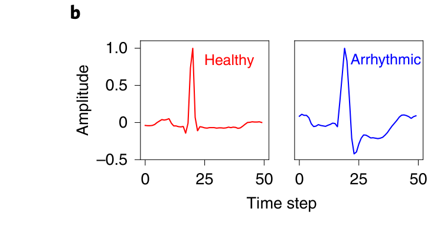
어디서 깨지나. Sampling period가 너무 길면 그 사이에 일어난 빠른 변화를 놓칩니다(그림 1(a)에서 점 사이의 굴곡). 너무 짧으면 두 가지 문제가 생깁니다. 숫자가 많아져 계산·저장 비용이 커집니다. 그리고 device의 응답이 다음 측정 전에 거의 변하지 않아 같은 값이 반복됩니다. 그래서 sampling period는 "신호가 변하는 속도"와 "device가 반응하고 잊는 속도" 사이에서 고릅니다. 이것이 Day 11–12에서 본 Stepney의 시간척도 조건 Stepney 2024, p.673을 숫자로 옮긴 것이고, Day 15–16·Day 23–24에서 다시 씁니다.
아래 예측 문제는 방금 본 역수 관계와 "개수 = 시간 × sampling rate"를 직접 써 보는 연습입니다.
72 Hz로 sampling하면 sampling period는 몇 ms일까요? 그리고 3초짜리 손동작을 10 Hz로 재면 숫자가 몇 개일까요? 먼저 계산하고 아래에서 확인하세요.
- Sampling = 연속 신호를 일정 간격으로 재기. Sampling rate(Hz)와 sampling period(s)는 역수: 250 Hz ↔︎ 4 ms.
- Time series = 시간 순서로 늘어선 잰 값의 목록. Time step \(t\)는 번호이고, 실제 시각 = \(t\) × sampling period.
- 예: 심전도 72 Hz, 한 박동 700 ms ≈ 50단계 Zhong 2022, p.675; 손동작 10 Hz, 3 s = 30단계 Zhong 2022, p.677.
- 남은 질문: 이 숫자 목록이 reservoir에 들어가면 state는 어떻게 바뀌나? → 다음 절(state update).
2. State update식을 손으로 돌리기: node 두 개
상황. 내 device 두 개(또는 reservoir node 두 개)의 전류가 서로 영향을 준다면 다음 순간의 값은 어떻게 정해질까요? 논문의 update식 \(x(t+1) = f(W x(t) + W_{in} u(t))\)가 바로 이 질문의 답입니다.
왜 지금? 앞에서 입력이 번호 붙은 숫자 목록이 되었으니, 그 숫자가 reservoir 안에서 state를 어떻게 바꾸는지 손으로 한 번 돌려 봅니다.
어디에 쓰이나? 논문 Methods의 state update식을 읽고, 내 device 읽기값 표가 그 식의 state \(x\)에 해당함을 알아볼 때 씁니다.
끝나면 할 수 있는 것. \(x(t+1) = \tanh(W x(t) + W_{in} u(t))\)를 node 두 개짜리 예로 세 단계 손 계산할 수 있고, 식의 각 부분(지금 state의 섞임, 새 입력, S자 함수)이 무슨 일을 하는지 말할 수 있다.
Day 11–12의 예에서 이어서. Day 11–12에서 state가 숫자 하나인 RNN \(h(t+1) = \tanh(0.5\,h(t) + u(t))\)를 손으로 돌렸습니다(0.762 → 0.363 → 0.180). State 두 개짜리도 돌렸습니다. 그때의 \(W\)는 행 1 = (0.5, 0), 행 2 = (0, 0.9)였습니다. 대각선 밖이 0이었으므로 두 칸은 서로 섞이지 않았습니다. 각자 다른 속도로 잊기만 했습니다(0.762 → 0.363 → 0.180과 0.762 → 0.595 → 0.490, Day 11의 RNN 손 계산). Day 11–12에서는 그 RNN을 고정한 채 readout만 맞췄습니다.
오늘은 대각선 밖에도 숫자를 넣어 칸끼리 서로 영향을 주게 합니다. Reservoir에서 보통 쓰는 모양이 이것입니다. 칸이 두 개면 그 효과가 처음으로 보입니다. 세 개 이상은 같은 계산을 되풀이할 뿐입니다.
\(h\) 대신 \(x\), 칸 대신 node. 기호 두 개를 바꿉니다.
- Day 11–12에서는 state를 \(h(t)\)로 썼습니다. Reservoir 문헌(Stepney 튜토리얼, 그리고 Day 15–16 이후)은 \(x(t)\)로 쓰는 경우가 많습니다. 그래서 오늘부터 \(x(t)\)로 씁니다. 뜻은 같습니다.
- State 목록의 칸 하나를 node라 부릅니다. "숫자 하나를 들고 다음 단계로 넘기는 단위"입니다. Day 11–12의 'state 두 칸'이 오늘의 'node 두 개'입니다.
앞에서 배운 개념도 짧게 되짚습니다.
- 모델: 입력에 weight를 곱해 출력을 내는 규칙.
- Vector: 숫자 목록. Matrix: weight를 행·열로 늘어놓은 표. 표 안의 숫자 하나는 원소(element).
- Matrix–vector 곱: "행 하나와 입력을 같은 자리끼리 곱해 더하기"(vector·matrix).
- \(\tanh\): 어떤 수가 들어와도 −1과 1 사이로 눌러 주는 S자 함수(\(\tanh(1) = 0.762\), Day 11의 tanh 그림).
State update식 \(x(t+1) = f(W x(t) + W_{in} u(t))\)를 숫자로
왜 필요한가. Reservoir가 "입력을 받아 state를 만든다"는 말은 이 식 하나로 정해집니다. 식을 손으로 한 번 돌려 보면, state가 무엇으로 만들어지는지 눈에 보입니다. 답은 '지금 입력 + 지난 state의 섞임'입니다.
기호와 단위.
- \(u(t)\): time step \(t\)의 입력(time step \(t\)에서 잰 값). 오늘 예에서는 0 또는 1. 무차원.
- \(x(t) = (x_1(t), x_2(t))\): node 두 개의 state 값 목록(vector). 무차원.
- \(W\): node끼리의 연결 세기를 적은 2×2 표. \(W[i, j]\)는 "node \(j\)의 지금 값이 node \(i\)의 다음 값에 얼마나 들어가나"입니다. 오늘 예: \(W = \begin{pmatrix} 0.4 & 0.3 \\ -0.3 & 0.5 \end{pmatrix}\).
- 대각선(diagonal: 왼쪽 위에서 오른쪽 아래로 놓인 0.4, 0.5): 자기 자신의 값이 얼마나 남나.
- 대각선 밖(0.3, −0.3): 다른 node의 값이 얼마나 섞여 들어오나. Day 11–12의 표는 이 자리가 0이었습니다.
- \(W_{in}\): 입력이 각 node에 들어가는 세기. 오늘 예: \(W_{in} = (1.0, -0.5)\).
- \(f\): 비선형 함수. 오늘은 \(\tanh\).
계산 순서.
- 지금 state에 \(W\)를 곱한다(node끼리 섞기).
- 지금 입력에 \(W_{in}\)을 곱해 더한다(새 입력 넣기). 이 합을 \(z\)라 부른다.
- \(z\)를 node마다 \(\tanh\)에 넣는다(−1과 1 사이로 누르기).
- 결과가 다음 state다. 다음 입력으로 1부터 반복한다.
결과의 뜻. 다음 state는 "새 입력"과 "지난 state를 섞은 것"의 합을 S자로 누른 것입니다. 지난 state는 그 전 입력들이 만든 것입니다. 그래서 반복할수록 state에는 여러 time step의 입력이 섞여 들어갑니다.
그림 읽는 법. 그림 2는 위의 기호를 그림으로 옮기고, 아래 손 계산의 답을 미리 표로 보여 줍니다.
- 동그라미 두 개가 node \(x_1\), \(x_2\)입니다.
- 자기 자신으로 돌아오는 화살표의 숫자가 \(W\)의 대각선(0.4, 0.5)입니다.
- 두 node를 잇는 화살표가 대각선 밖입니다(0.3: \(x_2\)에서 \(x_1\)로, −0.3: \(x_1\)에서 \(x_2\)로).
- 주황 화살표가 \(W_{in}\)입니다.
- (b)의 표는 입력 1, 0, 0을 넣었을 때 단계마다의 합 \(z\)와 다음 state(파랑)입니다. 아래 단계 카드 1–4가 이 표의 세 줄을 하나씩 채웁니다.
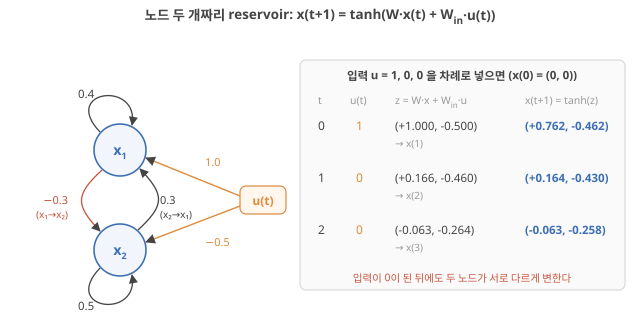
이제 손으로 돌립니다. 목적은 하나입니다. 입력이 0이 된 뒤에도 state에 무엇이 남는지 보는 것입니다. 입력 \(u = 1, 0, 0\)을 차례로 넣습니다. 처음 state는 \(x(0) = (0, 0)\)입니다.
단계 1 — \(t = 0\), 입력 1. 지금 state가 (0, 0)이라 \(W x(0) = (0, 0)\). 입력 항은 \(W_{in} \times 1 = (1.0, -0.5)\). 합 \(z = (1.0, -0.5)\). Node마다 \(\tanh\): \(\tanh(1.0) = 0.762\), \(\tanh(-0.5) = -0.462\). 그래서 \(x(1) = (0.762, -0.462)\). 같은 입력 1이 node 1은 위로, node 2는 아래로 밀었습니다(\(W_{in}\)의 부호가 달라서).
단계 2 — \(t = 1\), 입력 0: node 1의 섞기. 행 1은 (0.4, 0.3). \(0.4 \times 0.762 + 0.3 \times (-0.462) = 0.305 - 0.139 = 0.166\). 입력이 0이니 입력 항은 0. \(z_1 = 0.166\).
단계 3 — node 2의 섞기. 행 2는 (−0.3, 0.5). \(-0.3 \times 0.762 + 0.5 \times (-0.462) = -0.229 - 0.231 = -0.460\). \(z_2 = -0.460\). 그래서 \(z = (0.166, -0.460)\)이고, \(\tanh\)를 거치면 \(x(2) = (0.164, -0.430)\). 입력은 0이었는데 state는 0이 아닙니다. 한 단계 전 입력 1의 흔적입니다.
단계 4 — \(t = 2\), 입력 0. 행 1: \(0.4 \times 0.164 + 0.3 \times (-0.430) = 0.066 - 0.129 = -0.063\). 행 2: \(-0.3 \times 0.164 + 0.5 \times (-0.430) = -0.049 - 0.215 = -0.264\). \(\tanh\)를 거쳐 \(x(3) = (-0.063, -0.258)\). Node 1은 부호가 바뀌었고 node 2는 천천히 줄어듭니다. 두 node가 같은 과거를 서로 다른 모양으로 들고 있습니다.
정리. 세 경우를 비교합니다.
- Node 하나짜리(Day 11–12): 흔적이 한 가지 모양(0.762 → 0.363 → 0.180)으로만 줄었습니다.
- Day 11–12의 섞이지 않는 두 칸: 각자 한 가지 속도로만 줄었습니다.
- 오늘의 섞이는 두 node: 같은 입력의 흔적이 node마다 다른 속도·다른 부호로 남습니다.
Node가 200개면 200가지 모양의 흔적이 생깁니다. 그 다양함이 뒤에서 readout이 섞어 쓰는 재료가 됩니다.
직접 바꿔 보기: 입력 → state → 출력
위 손계산과 같은 node 두 개(\(W\), \(W_{in}\), tanh)를 컴퓨터가 계산합니다. 입력 순서, 입력 세기, node끼리 섞는 세기(\(W\) 배율)를 바꾸며 state가 무엇으로 만들어지는지 봅니다. 먼저 예상을 고르세요.
교육용 모형입니다. 본문 손계산의 작은 ESN(노드 2개)이며 실제 device reservoir가 아닙니다. 예시 출력 y = x₁ − x₂의 weight는 설명용으로 고른 값입니다. 입력은 0/1, 입력 세기 ×0.5–4, W 배율 ×0–2.
정적 예제. 입력 1, 0, 0, 0, 0, 0 (본문과 같은 설정)
| t | x₁(t) | x₂(t) |
|---|---|---|
| 1 | 0.762 | −0.462 |
| 2 | 0.164 | −0.430 |
| 3 | −0.063 | −0.258 |
| 4 | −0.102 | −0.110 |
| 5 | −0.074 | −0.024 |
W를 0으로 두면 t = 2부터 상태가 (0, 0)입니다.
무슨 일이 있었나. 세 가지를 볼 수 있습니다.
- 입력은 t = 0에 한 번뿐인데 state는 그 뒤로도 0이 아닙니다. \(W\)가 지난 state를 다음 state로 섞어 넘기기 때문입니다. 그 값은 점점 작아집니다(fading memory, Day 15–16).
- \(W\)를 0으로 두면 이 넘김이 없습니다. 그래서 기억도 사라집니다.
- 입력 세기를 4배로 올려도 state는 4배가 되지 않습니다. \(\tanh\)가 1 근처에서 눌러 주기 때문입니다. 이것이 비선형이고, 1 근처에서 더 오르지 않는 현상을 saturation(포화)이라 합니다.
Readout은 이렇게 만들어진 state를 받아 곱해 더할 뿐입니다. 그러니 task에 필요한 과거 정보가 state에 남아 있어야 답할 수 있습니다.
- 입력 세기 1 → 4이면 x₁(1)은?
답
tanh(4) ≈ 0.999. 1을 넘지 못합니다. - W = 0, 입력 1, 0, 0이면 x(2)는?
답
(0, 0). 지난 상태를 넘겨 줄 W가 없습니다.
일반식. 손 계산에서는 node마다 "행 하나와 지금 state를 곱해 더하기"를 따로 했습니다. 이것을 node 수와 상관없이 한 줄로 씁니다. Node가 \(N\)개, 입력이 하나라고 합시다. 그러면 \(W\)는 \(N \times N\) 표이고, \(W_{in}\)은 숫자 \(N\)개 목록입니다. 새 기호 \(\sum_{j=1}^{N}\)은 "node \(j\) = 1부터 \(N\)까지 모두 더하라"는 뜻입니다. Node \(i\)의 다음 값은 이렇습니다.
\[ x_i(t+1) = \tanh\!\Big(\sum_{j=1}^{N} W[i,j]\, x_j(t) + W_{in}[i]\, u(t)\Big) \]
- 왜 지금 필요한가: node 1, node 2의 섞기를 따로 계산한 손 계산을, node 수와 상관없이 한 줄로 쓰기 위해.
- 기호: \(\sum_j\)는 "모든 node \(j\)에 대해 더하라". 나머지는 위의 기호 목록과 같다.
- 단위: 모두 무차원(정규화한 값).
- 계산 순서: node \(i\)마다 (행 \(i\)와 지금 state를 자리끼리 곱해 더하기) + (입력 × \(W_{in}[i]\)) → \(\tanh\).
- 결과의 뜻: node \(i\)의 다음 값 = 모든 node의 지금 값과 지금 입력을 node \(i\)만의 비율로 섞어 누른 것.
논문에서는 어떻게 쓰나. 기호만 다르고 같은 식입니다.
- Liang 리뷰의 식 (1)은 \(s(n) = f[a W_{in} u(n) + b W_{res} s(n-1)]\)입니다. 여기서 \(s\)가 state, \(W_{res}\)가 오늘의 \(W\)입니다. \(a\), \(b\)는 입력과 되먹임의 크기를 조절하는 계수입니다. 리뷰는 \(W_{res}\)와 \(W_{in}\)을 보통 난수로 만들고, 학습하는 것은 \(W_{out}\)뿐이라고 적습니다. Liang 2024, p.194
- Stepney 튜토리얼의 식 1도 같습니다. 저자에 따라 첨자만 조금 다른 변형이 있다고 밝힙니다. 예를 들어 \(u(t)\) 대신 \(u(t+1)\)을 씁니다. Stepney 2024, p.668 Day 21–22의 실습 코드는 \(u(t+1)\) 쪽 변형을 씁니다. 결과의 뜻은 같습니다.
아래 예측 문제는 같은 reservoir에 입력만 바꿔, 섞기 항과 입력 항이 각각 어떻게 더해지는지 확인하는 연습입니다.
같은 reservoir에 입력을 \(u = 1, 1\)로 넣으면 \(x(2)\)의 첫째 값 \(z_1\)은 얼마일까요? 입력 1, 0을 넣었을 때 node 1의 섞기 결과는 0.166이었습니다. 여기에 무엇이 더해지는지 생각해 보세요. 아래 점검의 첫 문제는 단계 1의 확인, 둘째는 일부가 빈 문제, 셋째는 입력이 다른 새 문제입니다.
- State update = (지금 state를 \(W\)로 섞기) + (지금 입력 × \(W_{in}\)) → \(\tanh\)로 누르기. 매 단계 같은 \(W\), \(W_{in}\)을 쓴다.
- Day 11–12의 두 칸은 대각선 밖이 0이라 섞이지 않았고, 오늘의 \(W\)는 대각선 밖(0.3, −0.3)으로 node끼리 섞는다.
- 예: \(u = 1, 0, 0\) → \(x(1) = (0.762, -0.462)\), \(x(2) = (0.164, -0.430)\), \(x(3) = (-0.063, -0.258)\). 입력이 0이어도 흔적이 남는다.
- Node가 여럿이면 같은 과거가 node마다 다른 모양으로 남는다. 이 다양함이 readout의 재료다. \(W\), \(W_{in}\)은 난수로 만들고 학습하지 않는다 Liang 2024, p.194.
3. 내부 state는 무엇을 뜻하나: 입력 이력의 비선형 전개
상황. 논문은 "reservoir state는 입력 이력의 비선형 함수"라고 씁니다. 내 device의 전류가 정말 이력을 담고 있는지는 어떻게 보일 수 있을까요?
왜 지금? 방금 돌린 update식에서 state가 지난 입력에 따라 달라졌습니다. 이것이 무엇을 뜻하고 무엇을 뜻하지 않는지 정확히 해 둡니다.
어디에 쓰이나? "따로 넣은 응답의 합과 함께 넣은 응답이 같은가"를 내 device pulse response로 확인하는 실험(Day 17–18)의 바탕이 됩니다.
끝나면 할 수 있는 것. "State = 입력 이력의 비선형 전개"를 네 가지 입력 이력(00, 10, 01, 11)이 만드는 네 점으로 설명하고, superposition principle이 깨지는 것을 숫자로 보이며, state가 담지 못하는 것이 무엇인지 말할 수 있다.
방금 본 state update에서 state가 "여러 time step의 입력이 섞인 것"이라고 했습니다. 이 말을 정확히 하려면, 서로 다른 입력 이력을 넣고 state가 어떻게 달라지는지 직접 비교하면 됩니다.
Reservoir의 내부 state = 입력 이력의 비선형 전개
왜 필요한가. Readout은 state만 봅니다. 그러니 "state에 무엇이 들어 있나"가 곧 "readout이 무엇을 할 수 있나"의 한계입니다. State에 없는 정보는 어떤 readout도 꺼내지 못합니다.
무엇인가. State update식을 거꾸로 펼쳐 봅니다.
- 지금 state \(x(t)\)는 바로 전 state \(x(t-1)\)과 그때 들어온 입력 \(u(t-1)\)로 정해집니다.
- \(x(t-1)\)은 다시 \(x(t-2)\)와 \(u(t-2)\)로 정해집니다.
- 이것을 계속 거슬러 올라가면, 남는 것은 지난 입력들뿐입니다.
식으로 쓰면 이렇습니다. 여기서 \(F\)는 \(W\), \(W_{in}\), \(\tanh\)가 정하는 고정된 규칙(함수)입니다.
\[ x(t) = F\big(u(t-1),\, u(t-2),\, u(t-3),\, \dots\big) \]
곧 지금 state는 지난 입력들의 함수입니다. "입력 이력의 전개"는 이 뜻입니다. 지난 입력 목록을 node \(N\)개의 값으로 펼쳐 적은 것입니다. 그리고 \(F\) 안에 \(\tanh\)가 있습니다. 그래서 \(F\)는 입력들에 weight를 곱해 더하기만 한 것이 아닙니다. 이것이 비선형 전개라고 부르는 이유입니다.
'담겨 있다'가 뜻하지 않는 것. 두 가지를 조심합니다.
- 펼쳐 적었다고 지난 입력을 전부 담는 것은 아닙니다. 오래된 입력의 흔적은 작아집니다(Day 15–16의 fading memory). Node가 \(N\)개면 서로 독립인 정보도 많아야 \(N\)가지입니다(Day 19–20).
- "담겨 있다"는 수학적으로 0이 아니라는 뜻만으로는 쓸모가 없습니다. 잡음보다 크게, 다른 이력과 구별되게 남아야 합니다(Day 10의 task와 "읽을 수 있는 state").
네 가지 이력, 네 점. 이 예의 목적은 "state가 이력을 담는다"를 눈으로 보는 것입니다. 앞에서 손으로 돌린 node 두 개 reservoir에 입력 두 칸 \((u(0), u(1))\)을 넣고, 그 뒤의 state \(x(2)\)를 봅니다. 가능한 이력은 00, 10, 01, 11의 네 가지입니다(왼쪽 숫자가 먼저 들어간 것).
그림에 앞서 용어 둘을 정합니다.
- 선형(linear): update식에 \(\tanh\)가 없어 곱하고 더하기만 하는 시스템.
- Superposition principle: 선형 시스템에서는 두 입력을 함께 넣은 결과가 따로 넣은 결과의 합과 같다는 성질.
그림 읽는 법. 그림 3의 점 하나가 이력 하나입니다.
- 가로축은 입력 두 칸을 넣은 뒤 node 1의 값 \(x_1(2)\), 세로축은 node 2의 값 \(x_2(2)\)입니다.
- 지금은 "네 점이 모두 다른 자리에 있다"만 확인하세요.
- 보라색 빈 원은 "시스템이 선형이었다면 11이 있었을 자리"입니다. 아래 superposition 검사 카드에서 숫자로 확인합니다.
- 초록 점선 두 개는 그 아래 'readout은 직선을 긋는 일'에서 씁니다.
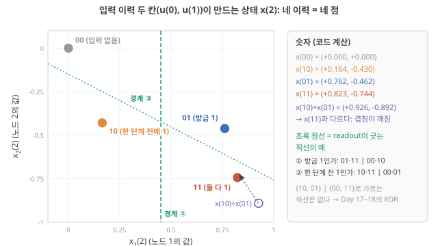
아래 단계 카드는 네 점의 좌표를 하나씩 구하고, 마지막 카드에서 superposition이 성립하는지 검사합니다.
단계 1 — 00. 아무것도 안 들어왔으니 \(x(2) = (0, 0)\).
단계 2 — 10 (한 단계 전에 1). 앞에서 입력 1 다음에 0을 넣어 구한 값 그대로 \(x(2) = (0.164, -0.430)\).
단계 3 — 01 (방금 1). \(x(1) = (0, 0)\)이고 그다음 입력 1이 들어옵니다. 앞에서 입력 1을 처음 넣었을 때와 같은 계산이므로 \(x(2) = (0.762, -0.462)\).
단계 4 — 11 (둘 다 1). \(x(1) = (0.762, -0.462)\)에서 출발합니다. 섞기 결과는 입력 1, 0일 때와 같은 \((0.166, -0.460)\)입니다. 여기에 새 입력 \(W_{in} \times 1 = (1.0, -0.5)\)가 더해져 \(z = (1.166, -0.960)\). \(\tanh\)를 거쳐 \(x(2) = (0.823, -0.744)\).
단계 5 — superposition principle 검사. 검사할 것은 "함께 넣은 결과 = 따로 넣은 결과의 합"이 맞는가입니다.
- \(\tanh\)를 뺀 식(선형)으로 먼저. 식은 \(x(t+1) = W x(t) + W_{in} u(t)\)로, 곱하고 더하기만 남습니다. 계산하면 \(x(10) = (0.25, -0.55)\), \(x(01) = (1.0, -0.5)\), \(x(11) = (1.25, -1.05)\)입니다. 정확히 \(x(10) + x(01) = x(11)\)입니다.
- \(\tanh\)가 있는 원래 식으로. \(x(10) + x(01) = (0.164 + 0.762,\; -0.430 - 0.462) = (0.926, -0.892)\)입니다. 그런데 실제 \(x(11) = (0.823, -0.744)\)입니다(그림 3의 보라색 빈 원과 빨간 점).
차이 \((-0.103, +0.148)\)은 "두 입력이 함께 1이었다"는 사실이 따로 남긴 흔적입니다. 이것이 비선형 전개의 덤입니다. 입력 두 개의 곱(둘 다 1인가?) 같은 정보가 state에 섞여 들어간 것입니다.
네 점이 모두 다른 자리에 있습니다. 그러므로 이 reservoir의 state는 "최근 두 입력"을 구별합니다. Day 10 사다리 2단(읽을 수 있는 state)의 첫 조건입니다. 여기서는 시뮬레이션이라 같은 입력에 늘 같은 state가 나옵니다(반복 가능). Device라면 이것도 반복 측정으로 보여야 합니다(Day 10의 읽을 수 있는 state).
아래에 그림 3을 다시 놓습니다. 이번에는 초록 점선 두 개를 봅니다. Readout이 이 평면에서 하는 일이 바로 이런 직선 긋기입니다.
Readout은 이 평면에 직선을 긋는 일이다. Day 10의 readout(Day 10의 readout 정의)은 state에 weight를 곱해 더한 값으로 답을 냈습니다. Day 11–12의 두 칸 readout도 \(y = w_a h_a + w_b h_b\)였습니다. 오늘은 여기에 상수 하나 \(w_0\)를 붙입니다. \(w_0\)는 state와 상관없이 늘 더하는 수입니다.
\[ y = w_0 + w_1 x_1 + w_2 x_2 \]
답을 "\(y\)가 0.5보다 크면 예"로 읽는다고 합시다. 그러면 이 readout은 평면에 직선 하나를 그어 양쪽으로 나누는 일을 합니다.
- 왜 직선인가. 경계는 \(y\)가 정확히 0.5인 점들입니다. 이 점들은 \(w_0 + w_1 x_1 + w_2 x_2 = 0.5\)를 만족합니다. 이것은 \(x_1\), \(x_2\)의 1차식이므로 평면에서 직선입니다.
- 예. \(w_0 = 0.05\), \(w_1 = 1\), \(w_2 = 0\)이면 경계는 \(x_1 = 0.45\)인 세로선입니다(그림 3의 경계 ①). 그 오른쪽 점은 \(y > 0.5\)('예'), 왼쪽 점은 '아니오'입니다.
Weight를 바꾸면 이 직선이 기울어진 방향과 위치가 바뀔 뿐, 굽은 선이 되지는 않습니다. 이제 그림 3에서 질문 세 개를 해 봅니다.
- "방금 들어온 입력이 1인가?"(01, 11 대 00, 10): \(x_1\)이 0.762, 0.823 대 0, 0.164입니다. 경계 ① 하나로 나뉩니다. 가능.
- "한 단계 전 입력이 1인가?"(10, 11 대 00, 01): 00과 01을 잇는 선 바로 아래에 10과 11이 모두 있습니다. 그 선을 조금 내린 직선(그림 3의 경계 ②)으로 나뉩니다. 가능. State에 과거가 담겨 있다는 증거입니다.
- "두 입력이 서로 다른가?"(10, 01 대 00, 11): 직선 하나로는 못 나눕니다. 00–11을 잇는 선분과 10–01을 잇는 선분이 한 점에서 엇갈리기 때문입니다. 직선이 00과 11을 한쪽에 두면, 둘을 잇는 선분 전체도 그쪽에 있습니다. 10과 01을 반대쪽에 두면, 그 선분 전체도 반대쪽에 있습니다. 그런데 두 선분이 만나는 점은 양쪽에 동시에 있을 수 없습니다. 이 reservoir는 비선형인데도 이 질문에는 답하지 못합니다.
셋째 질문이 XOR이라는 유명한 문제이고, Day 17–18의 주제입니다. 오늘 챙길 것은 하나입니다. "비선형이다"와 "readout이 원하는 답을 꺼낼 수 있다"는 다른 말입니다. Node 두 개, 이 \(W\), 이 \(W_{in}\)으로는 셋째 질문에 필요한 차이가 직선으로 가를 수 있는 모양으로 남지 않았습니다. Node를 늘리거나 \(W_{in}\)을 바꾸면 달라질 수 있습니다. 그것을 확인하는 방법이 held-out 성능(학습에 쓰지 않은 데이터에서 잰 성능, held-out 성능과 baseline)입니다. 해석
논문은 이렇게 쓴다. 두 리뷰가 같은 생각을 다른 말로 씁니다.
- ★ Liang: Reservoir 층의 목적은 저차원 입력을 고차원 feature space로 비선형 사상(nonlinear mapping)하는 것이다. 그래서 state는 고차원 공간에서 서로 다른 입력 정보를 잘 가르도록 "선형적으로 얽히지 않은(linearly uncoupled) 동역학"을 제공해야 한다. Liang 2024, p.194 여기서 "선형적으로 얽히지 않은"은 node들이 서로의 복사본이거나 단순한 배수가 아니어야 한다는 뜻입니다. 그 반대 경우가 readout 학습 절의 '거의 같은 node'이고, Day 19–20에서 숫자로 봅니다.
- Stepney: 난수 weight가 입력을 고차원 공간으로 무작위 사상(random mapping)한다. 그래서 학습한 선형 출력으로 원하는 분리가 가능해진다. 다만 어떤 사상은 다른 사상보다 낫고, 그것은 task에 따라 다르다. Stepney 2024, p.668
"State 하나에 입력의 과거 전체가 담긴다" — 수학적으로는 지난 입력이 모두 \(F\)의 재료입니다. 하지만 실제로 읽을 수 있게 남는 것은 최근 입력의 일부 정보입니다. 이유는 셋입니다. 오래된 입력의 흔적은 작아집니다(Day 15–16). Node 수만큼의 독립 정보만 담깁니다(Day 19–20). 잡음보다 작은 차이는 없는 것과 같습니다. Task에 필요한 차이가 state에 읽을 수 있게 남았는지는, 학습한 readout이 새 데이터에서 답을 가르는지로 확인합니다.
- State \(x(t) = F(u(t-1), u(t-2), \dots)\): 지난 입력들을 node \(N\)개 값으로 펼쳐 적은 것. \(\tanh\) 때문에 비선형이다.
- 예: 00, 10, 01, 11 → 네 개의 서로 다른 점(구별, Day 10 사다리 2단). \(\tanh\)를 빼면 \(x(10)+x(01) = x(11)\)이지만, 있으면 \((0.926, -0.892) \neq (0.823, -0.744)\) → superposition이 깨진다.
- Readout = state 공간에 직선(평면)을 긋는 일. "방금 1", "한 단계 전 1"은 가를 수 있었지만 XOR은 이 두 node로 못 갈랐다.
- Reservoir의 목적은 고차원 비선형 사상이며, node들이 서로의 복사본이 아니어야 한다 Liang 2024, p.194 Stepney 2024, p.668.
4. Readout 학습: least squares에서 ridge까지
상황. 내 device node N개의 전류를 읽어 모았다고 합시다. 이 N개 값에 곱할 weight는 어떻게 정하나요? 그리고 device 두 개가 거의 같은 전류를 내면 weight가 어떻게 되나요? 이 구간이 그 두 질문의 답입니다.
왜 지금? Readout에서 학습하는 것은 state에 곱할 weight뿐입니다. Weight를 어떻게 정하는지 모르면 논문의 "ridge regression으로 학습했다"를 읽을 수 없습니다. 보고된 오차가 training data의 값인지도 판단할 수 없습니다.
어디에 쓰이나? 두 곳에 씁니다. 논문의 \(\lambda\)(regularization) 값과 training/test 오차를 읽을 때. 그리고 내 device node들이 "거의 같은 값"을 낼 때 weight가 튀는 문제를 알아볼 때.
끝나면 할 수 있는 것.
- Day 11–12에서 식 두 개로 정확히 풀던 readout이, sample이 많아지면 왜 least squares(오차 제곱의 합을 가장 작게)가 되는지 세 sample의 그림으로 설명할 수 있다.
- 거의 같은 node 두 개에서 생기는 overfitting(weight +4, −3)을 ridge의 \(\lambda\)가 어떻게 막는지 손으로 계산할 수 있다.
- 그 손 계산을 matrix 기호(transpose·inverse matrix)로 옮긴 공식이 같은 계산이라는 것을 숫자로 대응시킬 수 있다.
Day 11–12에서 이어서: 식 두 개면 정확히 풀렸다. Day 11–12에서는 고정한 RNN의 state를 읽어 두 경우를 가렸습니다.
- 경우 A(정답 1)의 state: \((h_a, h_b) = (0.363, 0.595)\)
- 경우 B(정답 0)의 state: \((0.363, 0.363)\)
그리고 readout \(y = w_a h_a + w_b h_b\)가 두 경우를 정확히 맞히도록 식 두 개를 세웠습니다.
\[ 0.363\,w_a + 0.595\,w_b = 1, \qquad 0.363\,w_a + 0.363\,w_b = 0 \quad\Rightarrow\quad W_{out} \approx (-4.31,\; 4.31) \]
미지수(weight)가 둘이고 식(경우)도 둘이었습니다. 그래서 둘 다 정확히 맞출 수 있었습니다(Day 12의 readout 맞추기). 실제 데이터에서는 경우가 수백–수천 개이고, weight 수보다 훨씬 많습니다. 그러면 모든 식을 동시에 정확히 맞추는 weight가 없는 것이 보통입니다.
이 구간은 그때 생기는 질문 넷을 차례로 봅니다.
- 무엇을 가장 작게 할까? → least squares
- Weight가 이상하게 커지는 일은 왜 생길까? → overfitting
- 그것을 어떻게 막을까? → ridge
- \(\lambda\)는 어떻게 고를까? → λ 고르기
Least squares·overfitting·ridge에서는 weight 한두 개로 손 계산을 끝까지 합니다. 그다음 matrix 표기에는 새 계산이 없습니다. 이미 구한 숫자를 matrix 기호에 맞춰 보기만 합니다. Day 10 사다리로 말하면 3단, 학습한 readout을 만드는 과정입니다. 마지막 λ 고르기에서 4단(held-out)으로 넘어갑니다(Day 10의 증거 사다리).
Sample이라는 말. 여기서 sample은 Day 10에서처럼 '입력에서 얻은 state와 그 정답'의 한 쌍입니다. RC에서는 보통 time step 하나가 sample 하나입니다. 그 단계의 state \(x\)와 그 단계의 정답 \(y\)가 한 쌍입니다. Sampling 절에서 본 '잰 값'(신호를 한 번 잰 값)도 영어로는 sample이라 부르지만, 가리키는 것이 다릅니다.
이 구간에서 새로 나오는 용어를 먼저 표로 봅니다.
| 용어 | 뜻 | 이 예제에서 |
|---|---|---|
| Loss \(L\) | 얼마나 틀렸나를 숫자 하나로 잰 것 | 오차 제곱의 합 |
| Least squares | loss(오차 제곱의 합)가 가장 작은 weight를 고르기 | 세 sample에서 \(w = 1.036\) |
| Overfitting | training data의 우연한 잡음까지 맞춰 새 데이터에서 틀리기 | 거의 같은 node 둘에서 weight (+4, −3) |
| Ridge regression | loss에 "weight가 크면 벌점"을 더한 least squares | 벌점 \(\lambda w^2\) |
| \(\lambda\) (람다) | 벌점의 세기. 사람이 정하는 0 이상의 수 | 0, 0.01, 0.1, 1, 14 |
4-1. Weight 하나, sample 셋: least squares
Readout 학습: least squares와 ridge regression ① Least squares
왜 필요한가. Reservoir를 고정했으니 학습할 것은 readout weight뿐입니다. Sample이 weight보다 많으면 모든 sample을 정확히 맞출 수 없습니다. 그래서 규칙이 하나 필요합니다. "얼마나 틀렸나"를 숫자 하나로 정하고, 그 숫자가 가장 작은 weight를 고르는 규칙입니다.
가장 작은 경우. 이 예의 목적은 "모든 sample을 맞출 수 없을 때 어떤 \(w\)를 고르나"를 숫자로 보는 것입니다. 기호부터 정합니다.
- Node가 하나라 state \(x\)는 숫자 하나입니다.
- Readout은 \(\hat{y} = w x\)입니다. \(\hat{y}\)는 '와이 햇'이라 읽습니다. 모델이 낸 답을 정답 \(y\)와 구별하는 표시입니다.
- Sample 셋: \(x = 1, 2, 3\), 정답 \(y = 1.1, 1.9, 3.2\).
Sample 하나씩만 맞춰 봅니다. Sample 1만 맞추려면 \(w = 1.1/1 = 1.1\)입니다. Sample 2만이면 \(1.9/2 = 0.95\), sample 3만이면 \(3.2/3 = 1.067\)입니다. 세 값이 다릅니다. 그러니 세 sample을 모두 지나는 직선 \(\hat{y} = wx\)는 없습니다.
그래서 loss를 이렇게 정합니다. Day 11–12에서는 데이터 하나의 loss를 오차의 제곱으로 쟀습니다(loss). 오늘은 그것을 sample마다 구해 모두 더한 값을 loss로 씁니다. \(w\) 몇 개로 직접 계산해 봅니다.
| \(w\) | 오차 \(wx - y\) (sample 1, 2, 3) | 오차 제곱의 합 \(L\) |
|---|---|---|
| 0.5 | −0.6, −0.9, −1.7 | 0.36 + 0.81 + 2.89 = 4.06 |
| 0.95 | −0.15, 0, −0.35 | 0.0225 + 0 + 0.1225 = 0.145 |
| 1.0 | −0.1, +0.1, −0.2 | 0.01 + 0.01 + 0.04 = 0.060 |
| 1.1 | 0, +0.3, +0.1 | 0 + 0.09 + 0.01 = 0.100 |
Sample 하나에 딱 맞춘 \(w\)(0.95, 1.1)는 다른 sample에서 오차가 커집니다. 1.0 근처에서 합이 작아집니다. 가장 작은 곳은 어디일까요? 그림 4가 이 표를 곡선으로 그려 답을 보여 줍니다.
그림 읽는 법.
- 파란 점이 세 sample입니다. 초록 직선은 아래에서 구할 가장 좋은 \(w\)의 직선입니다. 빨간 세로 막대가 sample마다의 오차입니다. 회색 점선은 \(w = 0.5\)의 직선입니다.
- 가로축이 weight \(w\), 세로축이 그 \(w\)에서의 loss(오차 제곱의 합)입니다. \(w\) 하나에 loss 하나가 정해지므로 곡선이 됩니다. 곡선의 가장 낮은 점(바닥)을 보세요.
- 위에서 \(w\)를 바꿔 가며 계산한 loss 표에 바닥의 값을 더한 것입니다.
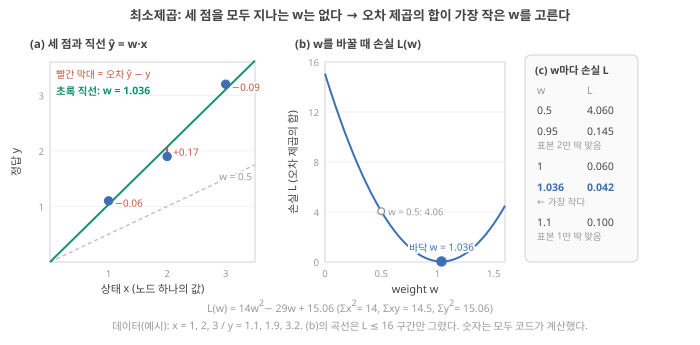
곡선은 바닥이 하나인 그릇 모양이고, 바닥은 \(w = 1.036\), loss 0.042입니다. 표의 어떤 \(w\)보다도 작습니다. 이렇게 오차 제곱의 합이 가장 작은 weight를 고르는 것을 least squares라 합니다. 이름 그대로 '제곱의 합을 최소로'입니다. Day 11–12처럼 weight 둘·식 둘이면 모든 sample을 정확히 맞출 수 있습니다. 그 답은 loss 0인 바닥이므로, 그것도 least squares의 한 경우입니다.
바닥을 공식으로 찾기. 그림 4(b)의 그릇에서 바닥은 gradient가 0인 곳입니다(gradient). Gradient는 "\(w\)를 조금 바꾸면 loss가 얼마나 변하나"의 비율입니다. Gradient = 0을 풀면 반복 없이 바닥이 나옵니다. 기호를 정합니다. \(k\)번째 sample의 state를 \(x_k\), 정답을 \(y_k\)로 씁니다. \(\sum_k\)는 "모든 sample \(k\)에 대해 더하라"입니다. 그러면 loss는 이렇습니다.
\[ L(w) = \sum_{k} (w\,x_k - y_k)^2 \]
바닥은 네 걸음으로 구합니다.
- Gradient를 구한다. Day 11–12의 공식 "gradient = 2 × 오차 × 입력"을 sample마다 쓰고 더하면 \(dL/dw = \sum_k 2(w x_k - y_k)\,x_k\).
- 바닥에서는 gradient가 0이므로 \(\sum_k 2(w x_k - y_k)\,x_k = 0\).
- 2로 나누고 괄호를 풀면 \(w\sum_k x_k^2 - \sum_k x_k y_k = 0\).
- 양변을 \(\sum_k x_k^2\)로 나누면 아래 식이 됩니다.
\[ w = \frac{\sum_k x_k y_k}{\sum_k x_k^2} \]
- 기호: \(x_k\)는 \(k\)번째 sample의 state 값, \(y_k\)는 그때의 정답.
- 단위: \(w\)의 단위 = 정답 단위 ÷ state 단위(오늘은 둘 다 무차원).
- 계산 순서: state × 정답을 모두 더한다 → state²을 모두 더한다 → 나눈다.
- 결과의 뜻: 오차 제곱의 합이 가장 작은 직선의 slope(기울기) \(w\).
숫자로 확인. \(\sum xy = 1.1 + 3.8 + 9.6 = 14.5\), \(\sum x^2 = 1 + 4 + 9 = 14\)이므로 \(w = 14.5/14 = 1.036\). 그림 4의 바닥과 같습니다.
왜 그릇 모양인지도 펼쳐 보면 보입니다. \((w x_k - y_k)^2 = x_k^2 w^2 - 2x_k y_k w + y_k^2\)입니다. 이것을 세 sample에 대해 더하면
\[ L(w) = 14\,w^2 - 29\,w + 15.06 \]
입니다. \(w^2\) 앞의 수는 \(\sum x^2 = 14\), \(w\) 앞의 수는 \(-2\sum xy = -29\), 상수는 \(\sum y^2 = 15.06\)입니다. \(w^2\) 앞의 수가 양수인 포물선이라 바닥이 하나뿐입니다.
이것은 이 예만의 우연이 아닙니다. Readout이 '곱해 더하기'뿐이고 loss가 오차 제곱의 합이면, loss는 늘 이런 포물선 꼴입니다. Weight가 여럿이면 여러 방향으로 휜 그릇이 됩니다. (뒤에서 볼 것처럼 node가 거의 같으면 그릇의 한 방향이 거의 평평해집니다.) 그래서 Day 11–12처럼 조금씩 내려가지 않고 한 번에 풀 수 있습니다. Day 11–12이 예고한 "linear regression을 공식 한 번으로"가 이것입니다.
4-2. Node 둘이 거의 같을 때: overfitting
상황. Reservoir의 node 두 개가 거의 같은 값을 낸다고 합시다. 같은 입력을 받는 비슷한 device 두 개를 node로 쓰면 생기기 쉬운 상황입니다 해석. 이 예의 목적은 이때 least squares의 weight가 왜 크게 튀는지, 그리고 그 weight가 새 데이터에서 어떻게 틀리는지 보는 것입니다. 데이터는 sample 네 개입니다.
| Sample | node 1 (\(x_1\)) | node 2 (\(x_2\)) | 정답 \(y\) |
|---|---|---|---|
| 1 | 1.0 | 1.02 | 1.0 |
| 2 | 2.0 | 1.97 | 2.1 |
| 3 | 3.0 | 3.03 | 2.9 |
| 4 | 4.0 | 3.98 | 4.1 |
Readout은 \(\hat{y} = w_1 x_1 + w_2 x_2\)입니다. \(x_{1k}\)는 \(k\)번째 sample에서 node 1의 값입니다. Loss는 세 sample 예와 같은 오차 제곱의 합 \(L = \sum_k (w_1 x_{1k} + w_2 x_{2k} - y_k)^2\)입니다.
식 두 개가 나오는 이유. 이제 weight가 둘입니다. 그래서 바닥에서는 \(w_1\) 방향으로도, \(w_2\) 방향으로도 gradient가 0이어야 합니다. Day 11–12의 둥근 d 기호로 쓰면 \(\partial L/\partial w_1 = 0\)과 \(\partial L/\partial w_2 = 0\)입니다. \(\partial L/\partial w_1\)은 "\(w_2\)는 그대로 두고 \(w_1\)만 조금 바꿀 때의 gradient"입니다(역전파).
첫째 식을 세 sample 예와 똑같이(gradient = 0) 풀면 \(\sum_k 2(\hat{y}_k - y_k)\,x_{1k} = 0\) → \(w_1 \sum x_1^2 + w_2 \sum x_1 x_2 = \sum x_1 y\)입니다. 둘째 식도 \(x_1\) 자리에 \(x_2\)가 들어간 같은 꼴입니다. Day 11–12처럼 미지수 두 개에 식 두 개, 곧 연립방정식(system of equations)이 됩니다. 다른 점은 하나입니다. 식의 숫자가 sample 하나의 값이 아니라 네 sample의 합입니다.
아래 단계 카드는 이 연립방정식을 실제로 풀고, 그 답을 새 데이터에 넣어 봅니다.
단계 1 — 식에 들어갈 합 다섯 개. \(a = \sum x_1^2 = 30.0\), \(b = \sum x_1 x_2 = 29.97\), \(d = \sum x_2^2 = 29.943\), \(r_1 = \sum x_1 y = 30.3\), \(r_2 = \sum x_2 y = 30.262\).
단계 2 — 풀이 공식. 두 식 \(a w_1 + b w_2 = r_1\), \(b w_1 + d w_2 = r_2\)의 해는 \(w_1 = (d r_1 - b r_2)/D\), \(w_2 = (a r_2 - b r_1)/D\)이고, 분모는 \(D = a d - b^2\)입니다(중학교 연립방정식을 공식으로 쓴 것).
단계 3 — 분모가 거의 0. \(D = 30.0 \times 29.943 - 29.97^2 = 0.077\). 두 node가 거의 같으면 \(ad\)와 \(b^2\)이 거의 같습니다. 그래서 \(D\)가 0에 가까워집니다. 0에 가까운 수로 나누면 답이 크게 튑니다. 계산하면 \(w_1 = +4.00\), \(w_2 = -3.00\)입니다. "Node 1을 4배, node 2를 −3배" 한 것입니다. 둘의 아주 작은 차이를 키워 정답의 잔물결까지 맞춘 셈입니다. Training data의 mean squared error(오차 제곱의 합 ÷ sample 수)는 0.00098로 아주 작습니다.
단계 4 — 새 데이터에서. 이 weight를 처음 보는 sample 두 개에 넣어 봅니다.
- 새 sample 1: node 값 (2.5, 2.6), 정답 2.55. 예측은 \(4.00 \times 2.5 - 3.00 \times 2.6 = 2.20\)입니다(소수 셋째 자리까지 쓴 weight로는 2.22).
- 새 sample 2: node 값 (3.5, 3.3), 정답 3.4. 예측은 \(4.00 \times 3.5 - 3.00 \times 3.3 = 4.10\)입니다(같은 방식으로 4.12). 0.7 넘게 틀립니다.
새 데이터 두 sample의 mean squared error는 0.317입니다. Training data의 0.00098과 비교해 보세요.
그림 읽는 법. 그림 5는 training data에서는 잘 맞던 weight가 새 데이터에서 왜 틀리는지 보여 줍니다.
- sample마다 두 node 값의 차이 \(x_1 - x_2\)를 막대로 그렸습니다. 파랑(training sample 넷)은 ±0.03 안이고, 주황(새 sample 둘)은 −0.10, +0.20입니다.
- sample마다 정답(검정 점)과 \(\lambda = 0\) readout의 예측(빨강 네모)입니다. Training sample에서는 두 표시가 거의 겹치고, 새 sample에서는 벌어집니다.
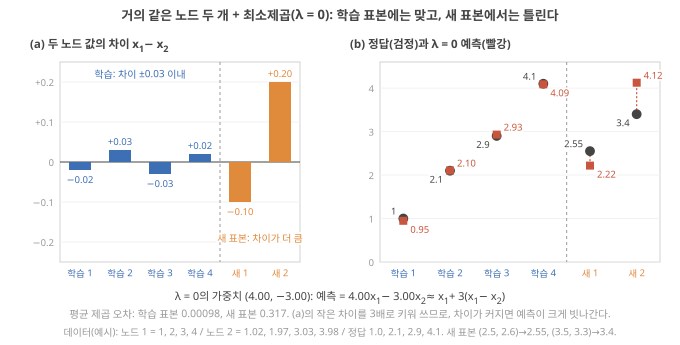
왜 이렇게 되나. Weight (4.00, −3.00)으로 예측을 다시 쓰면 \(4x_1 - 3x_2 = x_1 + 3(x_1 - x_2)\)입니다. 곧 "node 1의 값 + 두 node 차이의 3배"입니다.
- Training sample에서는 차이가 ±0.03 안입니다. 3배 해도 ±0.09입니다. 이것으로 정답의 잔물결(정답 − node 1 = 0, +0.1, −0.1, +0.1)을 일부 맞췄습니다.
- 새 sample 2는 차이가 +0.20입니다. 3배 하면 +0.6이 더해집니다. 그래서 정답 3.4 대신 약 4.1을 냅니다.
정리하면 이렇습니다. Weight는 training sample의 우연한 잔물결을 맞추려고 '두 node의 아주 작은 차이'를 크게 키웠습니다. 그 차이가 다르게 나오는 새 sample에서는 크게 틀렸습니다.
이것이 Day 10에서 이름을 본 overfitting입니다. Readout이 training data의 우연한 잡음까지 외운 것입니다. 그래서 training data에서는 잘 맞고 새 데이터에서는 틀립니다(Day 10의 overfitting 예).
- Day 10에서는 정답과 무관한 state를 늘려 같은 일이 생겼습니다. 조절할 weight 수가 sample 수에 가까울수록 쉬워졌습니다(Day 10의 외우기 시뮬레이션).
- 여기서는 weight가 둘뿐입니다. 그래도 두 node가 거의 같아 분모가 0에 가까워지면 생깁니다.
- Day 11–12에서 구한 \(W_{out} \approx (-4.31, 4.31)\)이 컸던 것도 같은 이유입니다. 그 readout은 \(4.31 \times (h_b - h_a)\)입니다. 경우 A에서 두 칸의 차이가 \(0.595 - 0.363 = 0.232\)뿐이었습니다. 그것을 1로 키우려면 \(1/0.232 = 4.31\)배가 필요했습니다.
4-3. Ridge: weight가 크면 벌점
Readout 학습: least squares와 ridge regression ② ridge의 \(\lambda\)
Weight가 크면 벌점을 주자. 거의 같은 node 둘의 예에서 문제는 이것이었습니다. Training 오차만 보고 weight를 정했습니다. 그래서 training 오차를 조금 줄이려고 weight를 마음껏 키웠습니다. 해결책은 loss에 "weight가 크면 벌점"을 더하는 것입니다. 그러면 training data에 조금 덜 맞는 대신 weight가 작게 유지됩니다. 이 방법을 ridge regression이라 합니다.
작은 숫자로 먼저(weight 하나). 이 예의 목적은 벌점이 그릇과 바닥을 어떻게 옮기는지 보는 것입니다. 세 sample(x = 1, 2, 3) 예에 벌점 \(\lambda w^2\)를 더합니다. \(\lambda\)(람다, 0 이상)는 벌점의 세기를 정하는 숫자이고, 사람이 정합니다. 고르는 법은 λ 고르기에서 봅니다.
\[ L(w) = \sum_{k} (w\,x_k - y_k)^2 + \lambda\, w^2 = 14w^2 - 29w + 15.06 + \lambda w^2 \]
\(\lambda = 1\)이면 \(15w^2 - 29w + 15.06\), \(\lambda = 14\)면 \(28w^2 - 29w + 15.06\)입니다. \(w^2\) 앞의 수만 커집니다. 그래서 그릇이 더 가팔라지고 바닥이 0 쪽으로 옮겨 갑니다. 바닥은 least squares와 같은 방법(gradient = 0)으로 구합니다. \(\lambda = 1\)이면 \(w = 14.5/15 = 0.967\), \(\lambda = 14\)면 \(14.5/28 = 0.518\)입니다.
그림 읽는 법. 그림 6은 \(\lambda\)를 키울 때 바닥이 어디로 가는지 보여 줍니다.
- 세 \(\lambda\)로 구한 직선입니다. \(\lambda\)가 커질수록 직선이 덜 가팔라지는 것을 보세요.
- 벌점을 더한 loss의 그릇 세 개입니다. \(\lambda\)가 커질수록 바닥의 점이 0 쪽(왼쪽)으로 가는 것을 보세요.
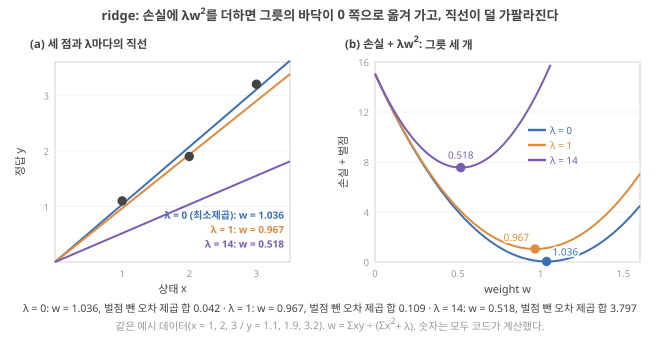
일반 공식. 벌점 \(\lambda w^2\)의 gradient는 \(2\lambda w\)입니다. Day 11–12에서 \((e + \delta)^2\)를 펼친 것과 같은 계산입니다. \(\lambda (w + \delta)^2 = \lambda w^2 + 2\lambda w\,\delta + \lambda \delta^2\)에서 \(\delta\)에 붙은 배율이 \(2\lambda w\)입니다(\(\delta\)는 \(w\)를 바꾸는 아주 작은 양). 그래서 gradient = 0은 \(\sum_k 2(w x_k - y_k)x_k + 2\lambda w = 0\)입니다. 2로 나눠 정리하면 \(w(\sum_k x_k^2 + \lambda) = \sum_k x_k y_k\), 즉
\[ w = \frac{\sum_k x_k y_k}{\sum_k x_k^2 + \lambda} \]
- 기호: \(\lambda\)는 벌점의 세기(0 이상). \(\lambda = 0\)이면 벌점 없는 least squares 그대로.
- 계산 순서: least squares와 같고, 분모에 \(\lambda\)를 더한다.
- 결과의 뜻: 분모가 커지므로 \(w\)는 0 쪽으로 줄어든다.
Regularization과 regularization term. 이렇게 loss에 벌점을 더해 weight를 억누르는 것을 regularization이라 부릅니다. 더한 항 \(\lambda w^2\)를 regularization term이라 합니다. 입력의 범위를 맞추는 normalization(정규화)과는 다른 말입니다(Day 11–12에서 구별함).
\(\lambda\)가 바꾸는 것과 대가. 그림 6 아래 줄을 보세요. 벌점을 뺀 training data의 오차 제곱 합이 커집니다. \(\lambda = 0\)이면 0.042, \(\lambda = 1\)이면 0.109, \(\lambda = 14\)면 3.80입니다.
- \(\lambda\)가 너무 작으면 weight를 붙잡지 못합니다.
- \(\lambda\)가 너무 크면 정답을 따라가지 못합니다. \(\lambda = 14\)의 slope 0.518은 데이터가 보여 주는 약 1의 절반입니다.
Weight 하나인 이 예에서는 줄여서 좋아지는 점이 보이지 않습니다. 이득은 '거의 같은 node 둘'처럼 node가 여럿이고 서로 비슷할 때 드러납니다.
거의 같은 node 둘에 \(\lambda = 0.1\)을 더하면. 이제 ridge를 overfitting 예에 써 봅니다. Weight가 둘일 때 벌점은 "weight 제곱의 합" \(\lambda(w_1^2 + w_2^2)\)입니다. \(w_1\) 쪽 gradient에는 \(2\lambda w_1\)만 붙고, \(w_2\) 쪽에는 \(2\lambda w_2\)만 붙습니다. 그래서 두 식에서 같은 node끼리 곱한 합인 \(a\), \(d\)에만 \(\lambda\)가 더해집니다.
- \(a = 30.1\), \(d = 30.043\).
- 분모 \(D = 30.1 \times 30.043 - 29.97^2 = 6.08\). 약 80배 커졌습니다.
- 해는 \(w_1 = 0.55\), \(w_2 = 0.46\). 두 node가 일을 비슷하게 나눠 갖습니다.
- Training data의 mean squared error는 0.0087로 조금 늘었습니다. 새 데이터의 mean squared error는 0.0009로 약 350분의 1이 됩니다.
그림 7은 \(\lambda\)를 0, 0.01, 0.1, 1로 바꿔 가며 같은 계산을 한 것입니다. (a)에서 weight 막대가 0.5 근처로 모이는 것을, (b)에서 두 오차가 서로 반대로 움직이는 것을 보세요.
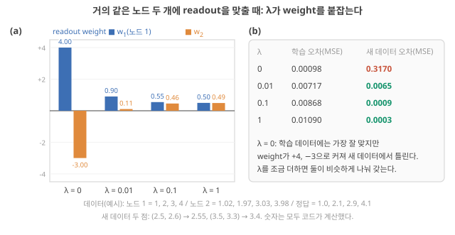
Stepney는 출력 weight를 구하는 방법 두 가지를 듭니다.
- Least squares의 답을 matrix 계산 한 번으로 직접 구하는 법. 논문 용어로 Moore–Penrose pseudoinverse이고, 뒤에서 볼 inverse matrix를 넓힌 것입니다. 정확하지만, overfitting을 피하려면 sample 수가 node 수보다 훨씬 많아야 합니다.
- Regularization parameter(매개변수)를 둔 ridge regression.
그리고 regularization을 크게 하면 출력 weight 성분의 크기가 줄어드는 대신 오차가 커진다고 씁니다. Regularization의 세기는 task·데이터에 따라 다르지만, 여러 값으로 한 번씩 계산해 보면 효율적으로 고를 수 있다고 합니다. Stepney 2024, p.669
아래 예측 문제는 두 공식 \(w = \sum xy/\sum x^2\)와 \(w = \sum xy/(\sum x^2 + \lambda)\)를 새 숫자에 써 보는 연습입니다.
데이터가 \(x = 1, 2\), \(y = 2, 3\)이면 least squares \(w\)는 얼마일까요? \(\lambda = 3\)인 ridge라면? 아래 점검의 셋째 문제입니다. 첫 문제는 세 sample 숫자의 확인, 둘째는 빈칸 채우기입니다.
4-4. Matrix로 쓰면: transpose와 inverse matrix
왜 필요한가. Node가 둘인 예에서는 합 다섯 개(\(a, b, d, r_1, r_2\))와 식 두 개로 충분했습니다. Node가 200개면 식이 200개입니다. 식에 들어갈 'node끼리 곱한 합'만 2만 개가 넘습니다. 같은 계산을 node 수와 상관없이 한 줄로 쓰려고 matrix를 씁니다. 새 계산은 없습니다. 앞에서 손으로 구한 숫자를 기호에 대응시키는 것이 전부입니다.
새로 필요한 말은 둘입니다. 먼저 표로 보고, 아래에서 작은 숫자로 뜻을 정합니다.
| 용어 | 기호 | 뜻 | 숫자 하나에 비유하면 |
|---|---|---|---|
| Transpose | \(X^{\mathsf T}\) | 표의 행과 열을 바꾼 것 | (해당 없음) |
| Inverse matrix | \(A^{-1}\) | 그 표로 '나누기' | 4로 나누기 = \(1/4\) 곱하기 |
| Identity matrix | \(I\) | 대각선만 1인 표. 곱해도 그대로 | 숫자 1 |
Transpose를 작은 숫자로. Transpose는 표의 행과 열을 바꾸는 것입니다. 3행 2열 표 \(\begin{pmatrix} 1 & 2 \\ 3 & 4 \\ 5 & 6 \end{pmatrix}\)의 transpose는 2행 3열 \(\begin{pmatrix} 1 & 3 & 5 \\ 2 & 4 & 6 \end{pmatrix}\)입니다. 첫 열 (1, 3, 5)가 첫 행이 되었습니다. 숫자는 하나도 바뀌지 않았습니다. 표 이름 오른쪽 위에 T를 붙여 \(X^{\mathsf T}\)로 씁니다.
Inverse matrix를 작은 숫자로. Inverse matrix는 '그 표로 나누기'입니다.
- 숫자 4로 나누는 것은 \(1/4\)을 곱하는 것이고, \(4 \times 1/4 = 1\)입니다.
- 표에서 1의 역할을 하는 것은 대각선만 1인 표 \(I = \begin{pmatrix} 1 & 0 \\ 0 & 1 \end{pmatrix}\)입니다.
- 예를 들어 \(A = \begin{pmatrix} 2 & 0 \\ 0 & 4 \end{pmatrix}\)의 inverse matrix는 \(A^{-1} = \begin{pmatrix} 0.5 & 0 \\ 0 & 0.25 \end{pmatrix}\)입니다. 둘을 곱하면 \(I\)입니다.
- 그래서 연립방정식 \(2w_1 = 6\), \(4w_2 = 8\)을 표로 쓴 \(A\mathbf{w} = (6, 8)\)은 \(\mathbf{w} = A^{-1}(6, 8) = (0.5 \times 6,\; 0.25 \times 8) = (3, 2)\)로 풀립니다.
대각선 밖이 0이 아닌 표도 뜻은 같습니다. 이제 node 둘 예의 숫자 그대로 그림을 봅니다.
그림 읽는 법. 그림 8은 손으로 구한 합 \(a, b, d, r_1, r_2\)가 matrix의 어느 칸에 들어가는지 보여 줍니다.
- node 둘 예의 state를 표로 모은 \(X\)입니다. 한 행이 sample 하나(한 time step의 state), 한 열이 node 하나입니다. 옆의 \(\mathbf{y}\)는 정답 목록입니다.
- \(X\)의 행과 열을 바꾼 표(transpose)입니다.
- (b)와 (a)를 곱한 2×2 표, 그리고 (b)와 \(\mathbf{y}\)를 곱한 목록입니다.
- 그것으로 weight를 푸는 과정입니다.
- 색: 파랑은 node 1, 주황은 node 2, 보라는 둘을 함께 곱한 칸입니다.
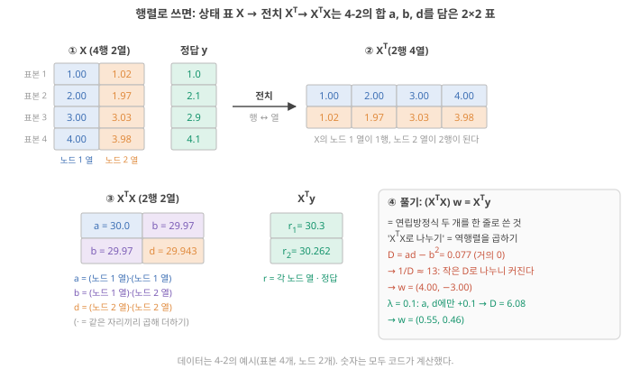
Transpose(그림 8(b)). 위의 작은 예와 같은 일을 4행 2열인 \(X\)에 합니다. \(X\)의 node 1 열(1.0, 2.0, 3.0, 4.0)이 \(X^{\mathsf T}\)의 1행이 되고, node 2 열이 2행이 됩니다. 숫자는 하나도 바뀌지 않고 자리만 바뀝니다.
\(X^{\mathsf T}X\)와 \(X^{\mathsf T}\mathbf{y}\)(그림 8(c)). Matrix–vector 곱과 같은 '같은 자리끼리 곱해 더하기'를 칸마다 합니다.
- \((1,1)\) 칸: \(X^{\mathsf T}\)의 1행(node 1)과 \(X\)의 1열(node 1). \(1.0^2 + 2.0^2 + 3.0^2 + 4.0^2 = 30.0 = a\).
- \((1,2)\) 칸: node 1과 node 2. \(1.0 \times 1.02 + 2.0 \times 1.97 + 3.0 \times 3.03 + 4.0 \times 3.98 = 29.97 = b\).
- \((2,2)\) 칸: node 2끼리. \(29.943 = d\).
곧 손으로 구했던 합 \(a, b, d\)가 그대로 2×2 표에 들어갑니다. 같은 방식으로 \(X^{\mathsf T}\mathbf{y}\)는 각 node 열과 정답을 곱해 더한 값입니다. \(r_1 = 30.3\), \(r_2 = 30.262\)입니다. 그래서 연립방정식 두 개가 한 줄이 됩니다. 여기서 \(\mathbf{w} = (w_1, w_2)\)입니다.
\[ X^{\mathsf T}X\,\mathbf{w} = X^{\mathsf T}\mathbf{y} \]
Inverse matrix(그림 8(d)). 숫자 하나라면 \(a w = r\)을 \(w = r/a\)로 풉니다. 표도 같습니다. 표 \(X^{\mathsf T}X\)로 "나누는" 것을, 그 표의 inverse matrix \((X^{\mathsf T}X)^{-1}\)을 곱하는 것으로 씁니다. 위의 \(A\) 예와 같은 일입니다. 결과의 뜻은 연립방정식의 해입니다. 여기서는 손으로 푼 공식이 주는 \(w_1 = 4.00\), \(w_2 = -3.00\)과 같습니다.
0에 가까운 수로 나누면 답이 커집니다. 표도 마찬가지입니다. 2×2 표의 inverse matrix 앞에는 \(1/D\)(\(D = ad - b^2 = 0.077\))가 붙어 약 13배로 키웁니다. 앞에서 본 '분모가 거의 0'이 이것입니다.
심화 · 2×2 inverse matrix를 직접 확인하기
2×2 표 \(\begin{pmatrix} a & b \\ b & d \end{pmatrix}\)의 inverse matrix는 \(\frac{1}{D}\begin{pmatrix} d & -b \\ -b & a \end{pmatrix}\)(\(D = ad - b^2\))입니다. 둘을 곱하면 대각선만 1인 표 \(I = \begin{pmatrix} 1 & 0 \\ 0 & 1 \end{pmatrix}\)가 나옵니다(1행·1열: \((ad - b^2)/D = 1\), 1행·2열: \((-ab + ba)/D = 0\)). 숫자 \(a\)와 \(1/a\)를 곱하면 1이 되는 것과 같은 성질입니다. 그래서 inverse(역)라는 이름이 붙었습니다.
이것을 \(X^{\mathsf T}\mathbf{y} = (r_1, r_2)\)에 곱하면 \(w_1 = (d r_1 - b r_2)/D\), \(w_2 = (a r_2 - b r_1)/D\)입니다. 손으로 푼 공식이 그대로 나옵니다. 이 숫자로는 \(1/D \approx 13.0\)이고, inverse matrix의 원소는 ±389 안팎으로 커집니다.
Node가 \(N\)개면 \(N \times N\) 표의 inverse matrix를 컴퓨터가 계산합니다(Gaussian elimination(가우스 소거) 등). 실제 프로그램은 inverse matrix를 따로 만들지 않고 연립방정식을 바로 푸는 경우가 많습니다. 원리는 같습니다. 일반 선형대수 내용이며 폴더 논문의 내용은 아님
Ridge를 넣으면. Ridge에서는 '대각선 \(a\), \(d\)에만 \(\lambda\) 더하기'를 했습니다. 이것을 표로 쓰면 \(X^{\mathsf T}X + \lambda I\)입니다. \(\lambda I\)는 대각선만 \(\lambda\)인 표입니다. Node가 몇 개든 같은 모양으로 쓰면 해는 이렇습니다.
\[ W_{out} = (X^{\mathsf T}X + \lambda I)^{-1} X^{\mathsf T}\mathbf{y} \]
- 왜 지금 필요한가: node가 200개여도 손 계산과 같은 일을 하는 공식. Day 11–12에서 본 Zhong 2026의 식 \(W_{out} = (U^{\mathsf T}U)^{-1}U^{\mathsf T}y\)는 이 식의 \(\lambda = 0\)인 경우다. Zhong 2026, p.8
- 기호: \(X\)는 state 표(\(T\)행 \(N\)열: sample \(T\)개, node \(N\)개), \(X^{\mathsf T}\)는 transpose, \(I\)는 대각선만 1인 표, \((\cdot)^{-1}\)은 inverse matrix(그 표로 '나누기').
- 단위: 무차원.
- 계산 순서: state 표를 모은다 → \(X^{\mathsf T}X\)와 \(X^{\mathsf T}\mathbf{y}\)를 만든다 → 대각선에 \(\lambda\)를 더한다 → 연립방정식을 푼다.
- 결과의 뜻: training data의 오차 제곱 합 + \(\lambda\) × (weight 제곱 합)이 가장 작은 readout. 반복 없이 한 번에 나온다.
읽는 법. 아래 원문 그림은 위 식의 표 \(X\)가 실제 device 시스템에서 어떻게 생겼는지 보여 줍니다.
- 그림 d의 세로축 "States" 120개가 node 수 \(N\)입니다(device 24개 × mask(마스크) 5칸, p.675).
- 가로축 "Time step" 50개가 한 박동의 time step입니다.
- 칸의 색이 state 값(0–1)입니다.
- 표 \(X\)의 한 행이 이 그림의 세로 한 줄에 해당합니다. 그림은 \(X\)를 옆으로 눕힌 모양입니다.
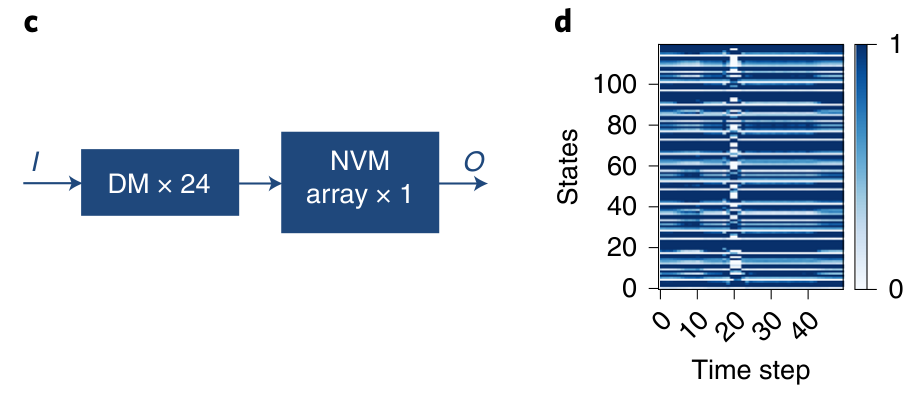
4-5. λ는 어떻게 고르나, 그리고 Day 10 사다리에서의 자리
Training data 오차로는 못 고른다. λ를 0, 0.01, 0.1, 1로 바꿔 본 결과를 다시 봅니다. Training data 오차는 \(\lambda = 0\)일 때 가장 작습니다(0.00098). 바로 그때 새 데이터 오차가 가장 큽니다(0.317). 그래서 \(\lambda\)는 학습에 쓰지 않은 데이터로 고릅니다. 순서는 셋입니다.
- Training data를 다시 둘로 나눕니다. 앞부분으로 여러 \(\lambda\)에 대해 \(W_{out}\)을 구합니다.
- 뒷부분(validation data)에서 오차가 가장 작은 \(\lambda\)를 고릅니다.
- 마지막으로 test data(training·validation 어디에도 쓰지 않은 것)로 성능을 한 번 잽니다.
Day 10의 held-out(held-out 성능과 baseline)을 한 겹 더 나눈 것입니다. Day 21–22의 실습 코드가 이렇게 합니다(training 1,500 / validation 500 / test 1,900단계). Test data를 보며 \(\lambda\)를 고르면 test data도 사실상 학습에 쓴 셈이 됩니다. 그러면 그 test 성능이 새 데이터에서의 성능을 과대평가하게 됩니다. 그림 9가 이 나누기와 순서를 한 장에 놓습니다.
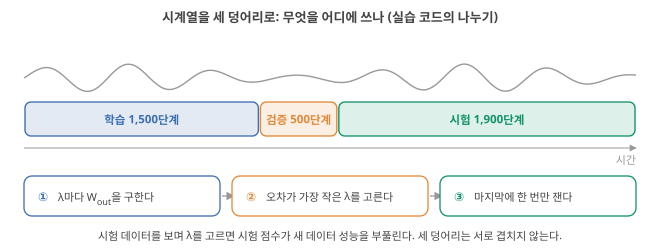
오늘 하는 일을 Day 10 사다리에 놓으면. 해석
| 오늘 한 일 | Day 10 사다리의 단 | 그 단에서 확인하는 것 |
|---|---|---|
| 신호를 sampling해 time step \(t\)와 정답을 정한다 | 1 task | 입력·정답·척도가 정해졌나 |
| State update로 state를 만들고, 다른 이력이 다른 점으로 끝나는지 본다 | 2 읽을 수 있는 state | 구별되나(네 점이 다른 자리), device라면 반복 측정해도 같나 |
| Least squares·ridge(또는 softmax + gradient descent)로 \(W_{out}\)을 정한다 | 3 학습한 readout | Training data만으로 숫자를 정했나 |
| \(\lambda\)를 validation data로 고르고, test data로 한 번 잰다 | 4 held-out | 외운 것이 아니라 새 데이터에서도 맞나 |
| Reservoir를 빼고 같은 readout에 지연 입력을 준 baseline과 비교한다 | 5 baseline | Reservoir 없이도 같은 성능이 나오지 않나 |
| 같은 정확도에서 회로·전력 비용을 비교한다 (Day 31–32) | 6 시스템 비용 | 디지털 구현보다 싼가 |
Training data에서 오차가 작다는 것(3단까지)은 증거가 아닙니다. '새 데이터에서도 맞는다'는 주장은 4단부터입니다.
- Sample
- State와 그 정답의 한 쌍. RC에서는 보통 time step 하나. Sampling에서 '신호를 한 번 잰 값'도 sample이라 부르지만 다른 것이다.
- Least squares
- 오차 제곱의 합이 가장 작은 weight를 고르기. 포물선 loss의 바닥(gradient = 0)을 공식으로 바로 푼다. Weight 하나면 \(w = \sum xy/\sum x^2\).
- Overfitting
- Training data의 우연한 잔물결까지 맞춰 새 데이터에서 틀리는 것. Overfitting 예의 \(\lambda = 0\)(training 0.00098, 새 데이터 0.317).
- Ridge regression / regularization term λ
- Loss에 \(\lambda w^2\)를 더해 weight가 커지지 않게 하는 least squares. \(w = \sum xy/(\sum x^2 + \lambda)\). 비슷한 node가 여럿일 때 분모가 0에 가까워지는 것을 막는다.
- Transpose / inverse matrix
- 표의 행과 열을 바꾼 것(\(X^{\mathsf T}\)) / 그 표로 '나누는' 것. \((X^{\mathsf T}X)^{-1}X^{\mathsf T}\mathbf{y}\)는 연립방정식의 해다.
- Training / validation / test data
- Weight를 정하는 데 / \(\lambda\) 같은 설정을 고르는 데 / 마지막에 성능을 한 번 재는 데 쓰는 데이터. 서로 겹치지 않는다.
- Day 11–12에서는 weight 둘·식 둘이라 정확히 풀렸지만(\(W_{out} \approx (-4.31, 4.31)\)), sample이 weight보다 많으면 모두 맞출 수 없다 → least squares = 오차 제곱의 합을 가장 작게. 세 sample이면 \(L = 14w^2 - 29w + 15.06\)의 바닥 \(w = 14.5/14 = 1.036\).
- 거의 같은 node 둘: \(D = ad - b^2 = 0.077\) → weight (+4, −3), 곧 예측 \(= x_1 + 3(x_1 - x_2)\) → 새 데이터에서 틀린다(0.317). 이것이 overfitting이다(예시 데이터 네 개로 한 Claude 계산).
- Ridge: loss에 \(\lambda w^2\), weight 하나면 \(w = \sum xy/(\sum x^2 + \lambda)\)(1.036 → 0.967 → 0.518). Node 둘이면 대각선 \(a\), \(d\)에 \(\lambda\) → \(\lambda = 0.1\)에서 \(D = 6.08\), 새 데이터 0.0009. Regularization을 키우면 weight가 줄고 training 오차는 는다 Stepney 2024, p.669.
- Matrix: \(X^{\mathsf T}X\)는 합 \(a, b, d\)의 표, inverse matrix는 그 표로 나누기(앞에 \(1/D\)). \(W_{out} = (X^{\mathsf T}X + \lambda I)^{-1}X^{\mathsf T}\mathbf{y}\). \(\lambda\)는 validation data로 고르고 성능은 test data로 잰다(Day 10 사다리 4단, held-out).
학습 완료
이 학습 단위를 마쳤으면 눌러 주세요. 쓰기·영상·심화·추가 연습은 필요 없고, 퀴즈 점수와도 따로 기록됩니다. '완료'는 이 단위를 끝냈다는 표시이지 모든 내용을 완벽히 익혔다는 뜻이 아닙니다.